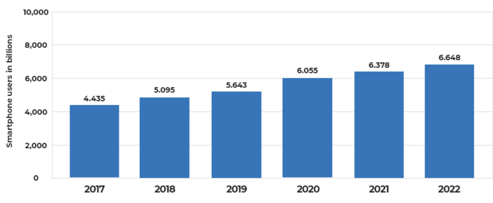

8/1/21
Stop Using Your Phone.
Introduction84% of the entire world has smartphones in their hands. Only 5 years ago, in 2016, this percentage was 50! If you read this article, you probably have a smartphone too, and you probably use it more than you like and definitely more than you need. In most smartphones nowadays there’s a way to check how much time you spend on the device. The average screen time is 3.5h a day, And for teenagers, Are you ready for it? 7.5 hours a day! It's about 114 days a year you spend with a screen.
 The ConsequencesSo after we understand we use our phone way too much, why is it even a problem? I can do a whole Article on the consequences of using a smartphone, but I will try to make it to the point. First - Addiction, it is so easy to open and use our phone, that the average person opens their phones more than 200 times a day! And when you open your phone it is very easy to dive in and spend hours. Laziness - when your phone is beside you, you feel like you don't need to do anything, and many people report that they are less productive near their phone. Even now when I’m writing this, my phone is calling me to come and spend time. It’s a nonstop fight against him. And lastly, your Sleep. One of the most important thing of the day, when you use your phone near bad time, your brain mistakes it as if you're in the day, and not in the night. And that's the cause of you having a hard time sleeping.
What can we do to reduce Screen Time?Those notifications, they are the devils. Every time you see one of them, you jump right into the phone and spend more time than you like. Simple Solution - Remove them. Remember when we say people pick up the phone 200 times a day? You probably see the message in about 5 minutes even if there was no notification. Close your eyes, think about your home screen, can you remember where the Instagram icon is? Or Snapchat? Probably yes, and your mind too, you open those apps immediately without even thinking about it. What I do, and you should too, just move your apps on the home screen every day, so that when your brain tries to get into Instagram, he has to do one more step. And lastly, almost every smartphone has a way to block some apps after a certain amount of time. Do it, it makes your decision to reduce screen time to be more realistic and easier, you don’t have to check on yourself, your phone will do it.
SummaryBefore I got the decision to reduce screen time, I was about 7 hours a day on my screen. Now I’m only 4h. yes, still a long way to go, but definitely a good start, and i really feel like I have more time, 3 hours a day. It's 45 days in a year. I reduce by making these small changes. I really believe that you can and should do it. Thanks for reading, I hope you like it.